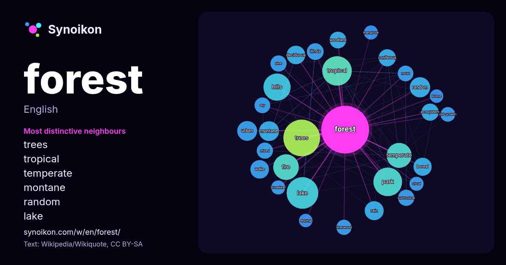

English · word of the day list
forest
The words found around it in 1875 instances from Wikipedia, Wikiquote, Hacker News.

Most distinctive neighbours
- trees 41×
- tropical 37×
- temperate 37×
- montane 24×
- random 23×
- lake 22×
- deciduous 21×
- boreal 21×
- wake 19×
- coniferous 19×
- rain 19×
- hills 18×
- ecosystem 17×
- fire 17×
- woodland 16×
- subtropical 16×
- urban 15×
- moist 15×
- sherwood 15×
- pine 14×
× = how many times more often than in general Wikipedia text.
Most frequent neighbours
- trees 82
- area 69
- lake 61
- tropical 53
- park 50
- national 47
- hills 45
- service 41
- fire 40
- temperate 38
- states 29
- large 28
- land 27
- city 25
- random 25
- montane 24
- urban 24
- black 23
- royal 23
- french 22
In context
- A forest is an ecosystem characterized by a dense community of trees. Hundreds of definitions of forest are used throughout the world, incorporating factors Wikipedia snippets · Forest
- FOREST (short for "Freedom Organisation for the Right to Enjoy Smoking Tobacco") is a United Kingdom smokers' rights group primarily funded by the tobacco Wikipedia snippets · FOREST
- The Forest may refer to: The Forest (Bannisdale), a summit in the English Lake District The Forest railway station, New South Wales, a disused Australian Wikipedia snippets · The Forest
- "A Forest" is a song by the English rock band the Cure. Co-produced by Mike Hedges and the band's Robert Smith, it was released as a single from the band' … Wikipedia snippets · A Forest
- Into the Forest is a 2015 Canadian apocalyptic drama film written and directed by Patricia Rozema, based on the 1996 novel of the same name by Jean Hegland Wikipedia snippets · Into the Forest
- Nottingham Forest Football Club is a professional football club based in West Bridgford, Nottinghamshire, England. The club competes in the Premier League Wikipedia snippets · Nottingham Forest F.C.
- Forest Steven Whitaker III (born July 15, 1961) is an American actor, filmmaker, and activist. His accolades include an Academy Award, a Golden Globe Award Wikipedia snippets · Forest Whitaker
- A cloud forest, also called a water forest, primas forest, or tropical montane cloud forest, is a generally tropical or subtropical, evergreen, montane Wikipedia snippets · Cloud forest
More words
- art
- autumn
- bell
- bread
- bridge
- cat
- city
- climate
- clock
- death
- desert
- dog
- family
- food
- garden
- god
- gold
- health
- heart
- history
- honey
- horse
- island
- language
- life
- map
- mirror
- money
- mother
- mountain
- nature
- power
- rain
- road
- salt
- science
- shadow
- silence
- song
- star
- storm
- summer
- tea
- time
- train
- truth
- water
- winter
- work
Precomputed on 2026-10-09 with default settings (±5 words, medium corpus). The interactive map can refresh it with live data.